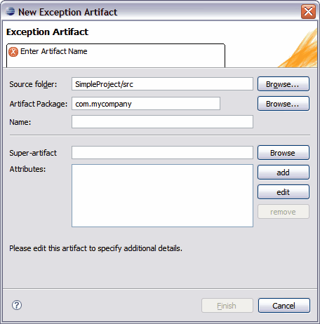

Creating and Editing Tigerstripe Artifacts
A Tigerstripe project contains a set of Artifacts that you can create, edit, and remove.
- Creation of Tigerstripe artifacts is wizard-based; that is, a specific wizard allows you to create the corresponding artifact from the Tigerstripe Perspective.
- Editing of Tigerstripe artifacts. You can edit all artifacts through a form-based artifact editor, where you can define all the specific details of the artifact.
The Creation Wizards
All Tigerstripe wizards are accessible from the Tigerstripe Perspective.
To access a Tigerstripe wizard:
- Select the corresponding icon on the Tigerstripe toolbar
-OR-
- Select the corresponding menu.
The icons open an artifact wizard to create a new artifact as follows (Please note that this list can vary based on your active Tigerstripe Profile, and on any custom creation tools that you have installed):
- to create a new Managed Entity Artifact ,
 to create a new Datatype Artifact ,
to create a new Datatype Artifact , to create a new Enumeration Artifact,
to create a new Enumeration Artifact, to create a new Named Query Artifact,
to create a new Named Query Artifact, to create a new Update Procedure Artifact,
to create a new Update Procedure Artifact,- to create a new Exception Artifact,
 to create a new Session Facade Artifact,
to create a new Session Facade Artifact,- to create a new Notification Artifact,
- to create a new Association Artifact,
- to create a new Association Class Artifact,
- to create a new Dependency Artifact,
 to create a new Package Artifact,
to create a new Package Artifact,
The main purpose of the wizard is to capture the minimal set of required information in order to create a artifact of the selected type. Although additional information may be required for specific artifacts, the following information is required for all artifacts:
- Source Project: the source project in which the artifact is created. In most cases, Tigerstripe is able to pre-populate this field based on the context. If not populated, or if the wrong project was selected, you can use the Browse button to select the correct Tigerstripe project in which the artifact is to be created.
- Artifact Package: each artifact is created within the scope of a package. This field should contain a valid package name. All non-valid names will be rejected and flagged by the wizard.
- Artifact Name: a valid name for the artifact. This name uniquely identifies the artifact within the scope of its package. All non-valid artifact names will be rejected and flagged by the wizard.
- Relationship Artifacts will require additional information about the artifacts at the end of the relationship
Once you enter all the required parameters for a specific artifact type, click Finish to create the corresponding artifact. Upon creation, a corresponding icon appears in the Tigerstripe Explorer, and the main editor page is set to the overview tab of the corresponding artifact editor. From this page, you can further edit and input additional information for the artifact.
An example creation wizard is shown below:

Editing Tigerstripe Artifacts
All Tigerstripe artifacts may be edited through a similar form-based editor. Although each particular type of artifact may have specific required information, the Overview tab for all editors will contain the General Information section, where you can enter additional documentation about the artifact.
The General Information
section contains the following information:

- Project: the identifier of the Tigerstripe project where the artifact is defined, as it appears in the Tigerstripe Explorer view. You cannot edit this field. For information on how to move artifacts across projects in the workspace, refer to Refactoring Artifacts.
- Qualified Name: the qualified name of the artifact - ie the package where the artifact is defined, followed by the artifact name. You cannot edit this field. For more information on how to move artifacts across packages, refer to Refactoring Artifacts.
- Description: a textual description of the artifact. This field can include HTML code and should document the artifact. This information is passed to the corresponding web page when the project is published.
- Extends: the fully qualified name of the super-artifact (that is, the name of the artifact being extended by the current artifact). This is how inheritance is achieved between artifacts. For more information about inheritance within Tigerstripe models, refer to Artifact Inheritence. Not applicable for all Artifacts
- Implements: a comma separated list of all interfaces that the artifact implements. Not applicable for all Artifacts, and only visible if enabled in the profile./li>
- Abstract: determines if the Artifact is abstract. Not applicable for all Artifacts.
- Stereotypes : Stereotypes that have a scope which include the corrsponding Artifact Type can be applied to the artifact. For more info see the section on Stereotypes.
Related Topics
Editing Entity Artifacts
Editing Datatype Artifacts
Editing Enumeration Artifacts
Editing Named Query Artifacts
Editing Update Procedure Artifacts
Editing Exception Artifacts
Editing Session Facade Artifacts
Editing Notification Artifacts
Editing Association Artifacts
Editing Association Class Artifacts
Editing Dependency Artifacts
Editing Package Artifacts
© copyright 2005, 2006, 2007 Cisco Systems, Inc. - All rights reserved